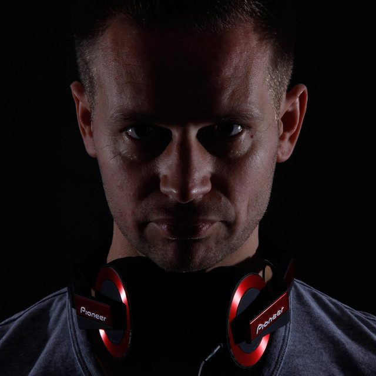

Dutch Master: Preparing to devestate


Dutch Master AKA Henry Snijders is one of hardstyle’s biggest talents, DJing from the age of 16 at a club in his hometown and gradually drawn towards the ‘dark side’ of hard dance. With the release of the hugely successful singles Insomnia and Get Up, there was no looking back and he now owns his own recording studio and works regularly with hardstyle royalty like Showtek. Well, hard dance fans unite because X-Qlusive touches down in Sydney and Melbourne this weekend, and Dutch Master is prepared to devastate. ITM finds out more…
Hi there, this is Angus from inthemix in Australia. How are you going today?
I am feeling fine after the big travel distance and look forward to my first performance and visit to Australia.
Tell us a little bit about what’s been happening with you in 2008. What’s been going on for you in terms of gigs, production and other music related stuff?
I have been very busy in traveling all around Europe and producing new records. This resulted in my first CD which was released in September. December 15 another new vinyl record was launched called Floorspin/Get Down.
What have been some of the highlights so far in terms of events you’ve played at?
Of course being present for a big enthusiastic audience is the ultimate experience. I have played at Q*-base, Qrime Time, Defqon1, Hard Bass* and big disco’s in Europe… And look forward to the sets in Melbourne and Sydney.
Looking at the international hard dance scene, things seem to be bigger than ever in 2008. Give us your rundown on where you think the scene is at the moment.
Right now I think the music stream is stabilizing and within that respect, I am trying to produce new refreshing records which are still hardstyle related but different from the existing records. It is difficult to describe, but hearing is in fact seeing what I mean.
For the uninitiated – how would you best describe your sound, and where do you think you fit in with the wider hard dance scene?
As I mentioned above, my style is different however still based on the hardstyle experiences I took with me over the last years. Think that my style is a little more experimental then others. The kicks I use in my records are all produced in my own recording studio and not copied or inserted from existing ones.
You’re in Australia right now to play the massive X-Qlusive tour. This will be the second time that the revered Q-Dance brand has made an appearance in Australia, and it certainly got a good response the first time around. Are you looking forward to ‘representing’ for the brand?
To be part of this Q-Dance X-Qlusive brand tour is a calling card for me throughout the world and of course I am proud to be one of them.
The fact that you’ve been chosen as one of the international headliners for the tour can be seen as a vote of confidence in your status as a hard dance heavyweight. Do you feel privileged, and do you see it as a mark of a successful career in music?
Every tour organized by Q-Dance consists of artists who already proved their quality and for that reason is always one big party. Being invited for this tour I see as a credit for my performances (sets) and productions so far and of course I am very privileged to be part of that.
Holland has continued to near completely dominate in recent years in two areas of dance music – trance, and hard dance. What is it about the Netherlands that allows it to keep consistently producing so many dance music icons?
Generally, we are a small country so from history we learned to be creative otherwise we don’t count. This is also reflected in our music and among others also soccer. So small a country, but with such creative sounds and new styles.
Thanks, can’t wait to catch you at X-Qlusive!
I am looking forward as well and taking the reactions so far into account, so does the audience.
Dutch Master will rock the nation this weekend at X-Qlusive, check out our Festival Page for more info.
Friday 19th December – Hordern Pavilion, Sydney
Saturday 20th December – Festival Hall, Melbourne
And take a look at our Snap! featured gallery from X-Qlusive in Amsterdam to see how the Dutch do it on their home turf.